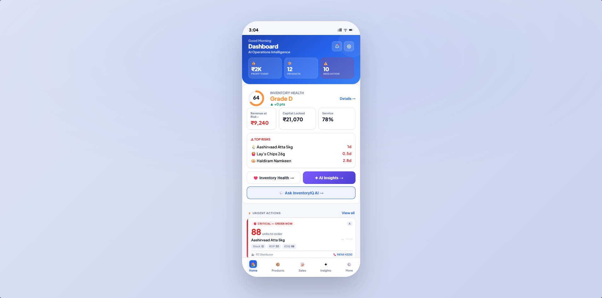
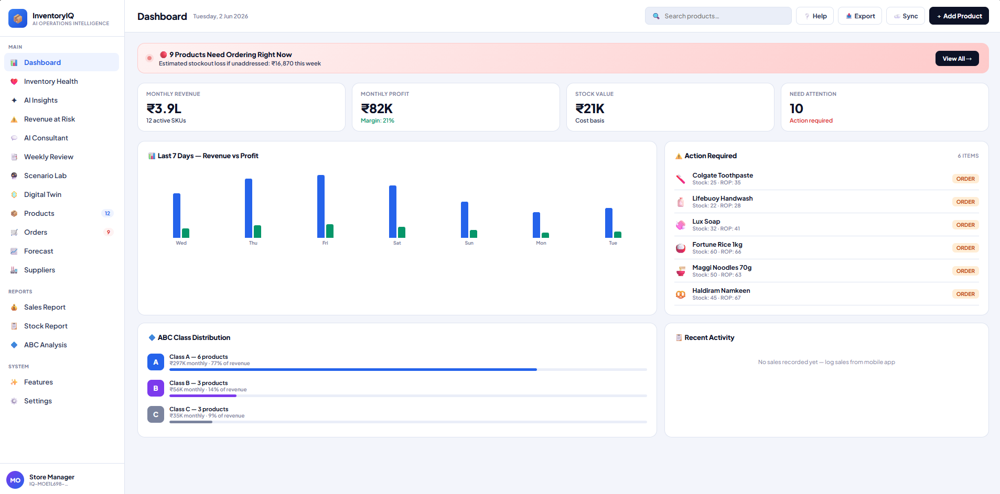

InventoryIQ inventory optimisation, built for the shop counter
A working, browser-based decision engine that folds four classical inventory models — forecasting, EOQ, reorder point and safety stock, with ABC prioritisation — into a single mobile-first tool. Demonstrated on twelve realistic SKUs modelled on a Madurai grocery shop, and designed around how the real user works: a phone in the apron, not a spreadsheet on a desk.
Small retailers carry the same inventory problem as a large warehouse — how much to order, and when — but none of the tooling. InventoryIQ puts the classical answers in their pocket: it forecasts demand, computes the economic order quantity, the reorder point and the safety stock for a chosen service level, and uses ABC analysis to focus attention on the items that matter. The result is a single, calculated decision — "order N units" — instead of a guess.
My Role
Concept, the integration of the four inventory frameworks into one engine, and the mobile-first UX. I designed the model logic and the product; AI accelerated the implementation.
Domain
Inventory & supply-chain optimisation for small, unorganised retail — the corner grocery, not the enterprise warehouse.
Stack
Runs entirely in the browser — HTML, CSS and JavaScript. Offline-first, with CSV import / export and a sales-log analytics view.
Status
Live tool (mobile + desktop). Demonstrated on twelve realistic, editable SKUs; math verifiable by hand.
The Problem
The models exist in textbooks — not at the counter
Business problem
A small shop loses money two ways at once: stockouts cost sales and loyalty, while overstock locks up working capital and spoils perishables. Ordering is done by gut feel, so both happen — often on the same shelf in the same week.
Operational problem
The textbook fixes — EOQ, reorder point, safety stock — already exist, but they live in spreadsheets and lecture notes. The shop owner has a smartphone in the apron and no time to open Excel between customers. The tooling never reaches the person who needs it.
Design for the user, not the consultant
Walk past any Madurai grocery shop and the owner has a phone in their pocket, not a laptop on a desk. So InventoryIQ is built mobile-first around a single question — "how much do I order, and when?" — answered in one tap. The best operational tool is the one that survives contact with the real floor.
The Approach
Four classical frameworks, one engine
Each model answers one question. InventoryIQ runs them together so the outputs of one feed the next, end to end.
01
Demand forecasting. Estimates expected demand per SKU from its sales pattern — the input every other model depends on.
02
Economic Order Quantity (EOQ). The order size that minimises the combined cost of ordering and holding — answering how much to buy each time.
03
Reorder point (ROP). The stock level that triggers a new order, accounting for demand during the supplier lead time — answering when to buy.
04
Safety stock. The buffer that absorbs demand and lead-time variability, sized to a chosen service level (e.g. 95% → z ≈ 1.65) — answering how much cushion against stockout.
05
ABC analysis. Ranks SKUs by value contribution so the owner spends attention on the vital-few A-items, not the trivial-many — answering what to focus on.

ScreenshotMobile decision screensave to assets/shots/iq-mobile.png
The mobile decision screen — one tap returns the order quantity and reorder point for a SKU.
How it works
From SKU data to a single decision
01
Enter or import the SKU. Demand, unit cost, ordering cost, holding cost, lead time — typed in, or loaded from a CSV.
02
Forecast demand for the planning horizon.
03
Compute EOQ, reorder point and safety stock at the chosen service level — all live, in the browser.
04
Classify the SKU (A / B / C) so the result is framed by how much the item matters.
05
Return one answer — "order N units" — plus the reorder trigger, ready to act on at the counter.
Demonstrator
Twelve SKUs from a real grocery basket
The tool ships with twelve realistic, fully editable SKUs modelled on a typical Madurai grocery shop — so a 30-second walkthrough runs on believable data, not lorem-ipsum.
Every figure is editable, and new SKUs can be added — the demo is a starting point, not a fixed dataset.
ABC dashboard
The basket is auto-classified A / B / C by value, so the owner sees at a glance which few items deserve the tightest control.

ScreenshotDesktop dashboard — SKU table + ABCsave to assets/shots/iq-dashboard.png
The desktop dashboard — the 12-SKU basket with live EOQ / ROP results and ABC classification.
Build
How it's built
In the browser
Pure HTML, CSS and JavaScript — no backend. Every calculation runs client-side, so it works offline and loads instantly on a phone.
Data in / out
CSV import and export, plus a sales-log analytics view — so a shop's real numbers can replace the demo basket.
Two surfaces
A mobile-first app for the counter, and a fuller desktop dashboard for planning — the same engine behind both.
What's mine, and how AI was used
The concept, the integration of the four inventory frameworks into one coherent engine, and the mobile-first UX are mine — including the decision to lead with a single "order N units" answer. AI coding assistance accelerated the implementation. The model integration and the product design are the work; the boilerplate is not.
Validation
The math checks out by hand
Because the models are classical, the engine is verifiable rather than a black box. For any SKU, the EOQ, reorder point and safety stock can be reproduced by hand from the same inputs — and the safety-stock figure is stated against an explicit service level (e.g. 95% → z ≈ 1.65), so the buffer is defensible, not arbitrary.
Impact
From guesswork to a calculated order
01
Fewer stockouts. A reorder point sized for lead-time demand catches the shelf before it empties.
02
Less locked capital. EOQ stops the over-ordering that ties up cash and spoils perishables.
03
Focused attention. ABC tells the owner which few SKUs deserve the tightest control.
04
Decisions in seconds. One tap, one number — usable in the gap between two customers.
Reflection
Lessons learned
Meet the user where they are
The most correct model is useless if it never reaches the counter. Form factor is part of the operations problem, not an afterthought.
One answer beats five charts
A shop owner needs a decision, not a dashboard. Collapsing four models into a single recommendation is the hard, valuable part.
Classical > clever, here
EOQ and reorder point are decades old and exactly right for this user. The contribution is integration and delivery, not novelty.
Limitations — honest scope
Demonstrated on a 12-SKU synthetic basket, not yet deployed in a live shop with real sales history. The classical models assume relatively stable demand and known costs / lead times; highly erratic demand would need a stronger forecasting method. The tool computes decisions — it does not place orders or integrate with a supplier system. Stating the scope is part of the work.
Roadmap
Where it goes next
Next
Real sales-history import — drive the forecast from a shop's actual transaction log rather than typed demand.
Short-term
Stronger demand forecasting — seasonality and trend for items with irregular sales.
Medium-term
Barcode / quick entry — add and update SKUs at the speed of a busy counter.
Long-term
Supplier lead-time learning — adjust the reorder point automatically as real delivery times are observed.